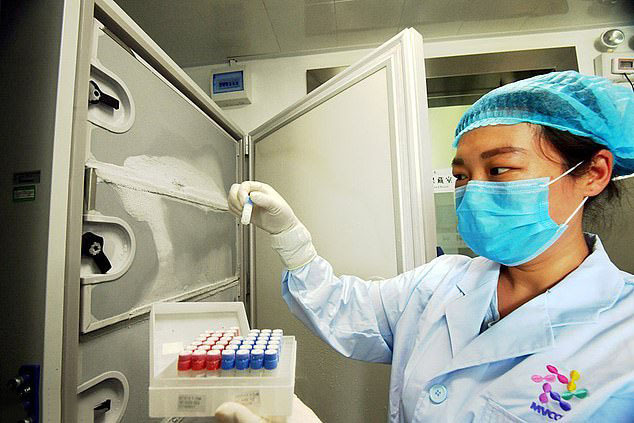

Coronavirus DID leak from Wuhan lab as wet market theory ‘doesn’t stack up’, professor claims
7
CORONAVIRUS emerging in a wet market 'doesn't stack up' and the virus leaking from a Wuhan lab is the only other 'plausible explanation', an expert has claimed.
The global pandemic was believed to have started in a wet market in the Chinese city after jumping from bats to humans.
7
But some – including Donald Trump – have claimed Covid-19 might actually have escaped from a lab studying similar viruses just a few miles away.
And an Australian professor in public ethics says this is the most feasible explanation.
Professor Clive Hamilton told Sky News: 'The argument that the coronavirus emerged from the South China Seafood market just no longer stacks up.'
He said the earliest cases of Covid-19 were in people who had nothing to do with the wet market.
The argument that the coronavirus emerged from the South China Seafood market just no longer stacks up.'
The professor said: 'This has been demonstrated by top quality studies.
'So the idea that it originated in December sometime, usually late December, in this market, simply doesn't stack up.'
Prof Hamilton added: 'The only other plausible explanation was that it was a leak from the Wuhan Institute of Virology.'
It comes as analysis of mobile phone data showed the Wuhan Institute of Virology - which was studying bats in Wuhan - shut down in October, it was claimed on Saturday night.
US and UK intelligence agencies were said to be examining the report, which adds weight to the theory the coronavirus accidentally escaped from the lab after jumping from bats to humans.
The data report, obtained by the NBC News in London, said there was no phone activity in a high-security portion of lab from October 7 to October 24, 2019.
It indicates that there may have been a 'hazardous event' sometime between October 6 and October 11.
It offers no direct evidence of a shutdown, or any proof for the theory that the virus emerged accidentally from the lab.
If there was such a shutdown, it could be seen as evidence alluded to by Trump administration officials that the novel coronavirus spread from bats to humans at the lab.
Many scientists are sceptical, arguing that the more likely explanation is that the virus was transmitted to humans through animals in a Wuhan live produce market.
The World Health Organization said Friday it believed the 'wet' market played a role in the spread of the disease.
The first case of the virus in China has been traced back to November 17, but researchers are beginning to question it, given that a case was documented in France in December.
The document says its analysis suggests the pandemic began 'earlier than initially reported' and 'supports the release of Covid-19 at the Wuhan Institute of Virology'.
US President Donald Trump has previously said he had seen evidence that gives him 'a high degree of confidence' that the virus emerged accidentally from a lab.
American intelligence officials say they have not reached that conclusion and lack hard evidence to support it.
Posted On: 2020-05-11T09:59:00
Posted By: Tom Michael



Content Date: 2020-05-11
Download Date: 2021-05-13
Document ID: L0C04C3W5